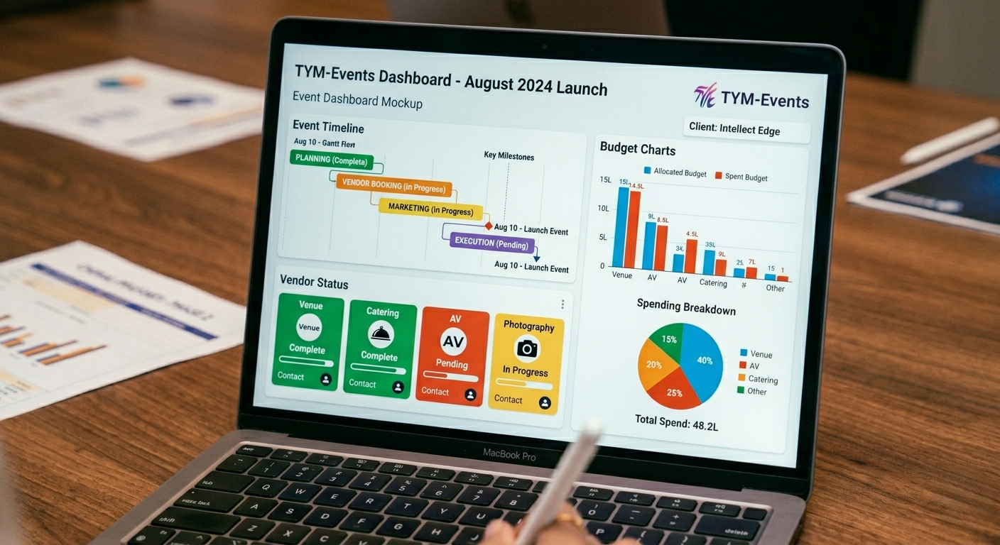

Our Platform
Tamil Nadu's first multi-community event operating system
Real-time dashboard, family portal, vendor hub, and guest experience " all unified in one premium interface. Built for the diversity of Tamil Nadu's celebrations.
Real-time dashboard, family portal, vendor hub, and guest experience " all unified in one premium interface. Built for the diversity of Tamil Nadu's celebrations.

Open a dashboard and see vendor status, budget burn, guest RSVPs, ritual timeline, and real-time issues " all in one place. No other Tamil Nadu event company gives this level of transparency with this level of polish.
When families see that they can log in and check everything in real time " from Chennai or from abroad " they realize they were being kept in the dark by traditional planners. Once they taste transparency, they cannot go back.

The family is at the centre of everything we do. Our portal gives complete visibility to everyone who matters " from the parents coordinating rituals to the cousin managing guest lists. Every step is tracked with checklists, approvals, and status updates.
For family elders who want to stay informed without being involved in operations, we offer a View-Only mode. They see everything. They don't need to manage anything.

Vendors " from caterers and decorators to priests and photographers " get a simple, mobile-friendly portal. No app install required. They see their tasks, deadlines, and deliverables, and communicate directly with the coordinator.
We personally vet every vendor before they join our network. Kanchipuram saree suppliers, traditional caterers, church florists, Qazis " every partner meets our premium standard before we recommend them to your family.
Guests see a real-time event timeline, photo stream, announcements, and interactive information on their phones " all branded to match your event theme. Whether it is a temple wedding, church ceremony, or Nikah " guests stay informed and engaged.

The engine room. Our daily standup " every morning at 9 AM " reviews every active event's status, flags risks, and assigns actions. No event goes more than 24 hours without a structured review.
Communication is the most time-consuming task " answering family questions, coordinating vendor updates, managing changes. We are building AI-powered chatbots with Tamil language support to reduce this burden while maintaining the personal touch.
After the celebration, we deliver a detailed analytics dashboard: attendance rate, engagement score, timeline adherence, budget accuracy. And the curated photo and video gallery " delivered within 7 days, branded, edited, treasured.
Your family event archive stays accessible for years. Photos, videos, contracts, and analytics " everything in one place. This is where functional service becomes emotional memory.
Enterprise-grade security, real-time updates, and a premium interface " accessible to every family member, whether they are in Chennai or across the world.
Premium Frontend
Backend API
Database & Caching
Real-Time Updates
Global Infrastructure
Family Data Security
Mobile App (Phase 2)
Bilingual Support
We protect your family's data, contracts, and memories with enterprise-grade security " so you can focus on celebrating.
All family information, guest lists, and financial data encrypted and protected. We treat your family's privacy like our own.
All communications, contracts, and documents encrypted in transit and at rest using AES-256 standards.
Granular permissions " you decide which family members see what. Full audit logging for every action on your event.
We are investing in innovations that will make every family's celebration even more beautiful, more connected, and more stress-free.
An AI that helps families understand rituals, suggests vendors based on their tradition, and optimizes timelines based on historical data from 300+ Tamil Nadu events.
Complete Tamil language interface for families who prefer to plan their events in their mother tongue. Every screen, every notification, every contract.
Carbon footprint tracking, zero-waste vendor recommendations, and sustainable decor options for environmentally conscious Tamil Nadu families.
Immutable, transparent contracts with priests, Qazis, and vendors. Every agreement is clear, verifiable, and digitally signed.
AI that forecasts guest attendance, catering quantities, and logistics requirements based on your event type and Tamil Nadu's seasonal patterns.
See your wedding hall, church, or function venue decorated before a single flower is ordered. Augmented reality previews for Tamil Nadu families planning from abroad.
Book a demo and see how TYM Events brings premium transparency to every celebration.